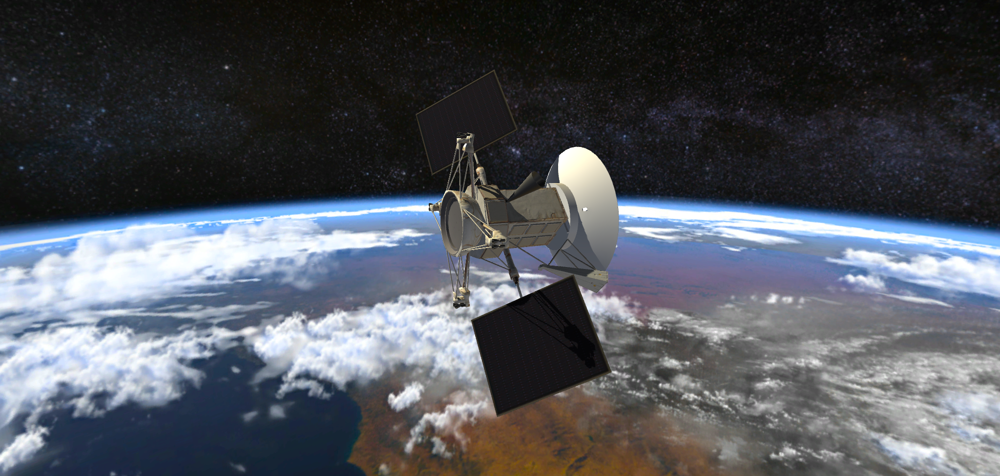

Fusées
L’intelligence artificielle est utilisée dans le pilotage des fusées afin d’assurer une précision maximale ainsi qu’une sécurité sans faille. On peut attendre des avancements conséquents dans cette branche du domaine avec peut-être, dans
un futur plus ou moins proche, des vaisseaux spatiaux totalement autonomes. Cependant, il faut faire attention aux dangers de la technologie et s’assurer de son bon fonctionnement car il y a déjà eu un précédent de bug informatique ayant
mit en péril une mission.

Rovers
Cette technologie peut également être retrouvée dans les rovers d’exploration extraterrestre. En effet, l’IA permet aux engins d’éviter les obstacles et de déterminer les meilleures routes à emprunter. L’utilisation de systèmes tels que
ceux-là est indispensable dans ces conditions, étant donné que les communications avec la Terre ne sont pas en temps réel: elles prennent plusieurs dizaines de minutes, ce qui montre la nécessité d’une certaine autonomie.

Machine learning
Les images et données récoltées par les instruments terrestres et les satellites commencent à être analysées par des logiciels utilisant des techniques de machine learning. Ces technologies permettent de détecter les dommages des tempêtes
solaires, de faire des mesures atmosphériques et bien plus. Les résultats obtenus sont très précis et l'intelligence artificielle permet de réduire les risques d'erreur humaine.